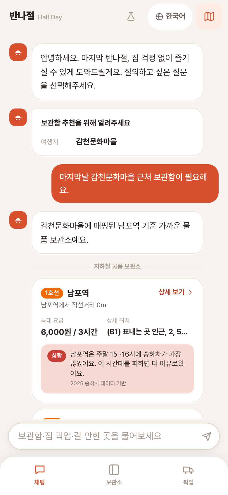
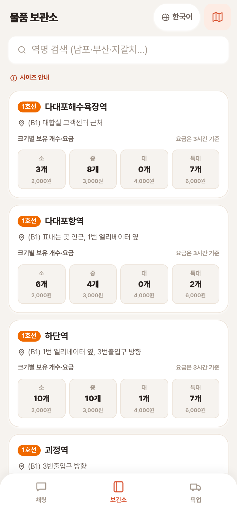
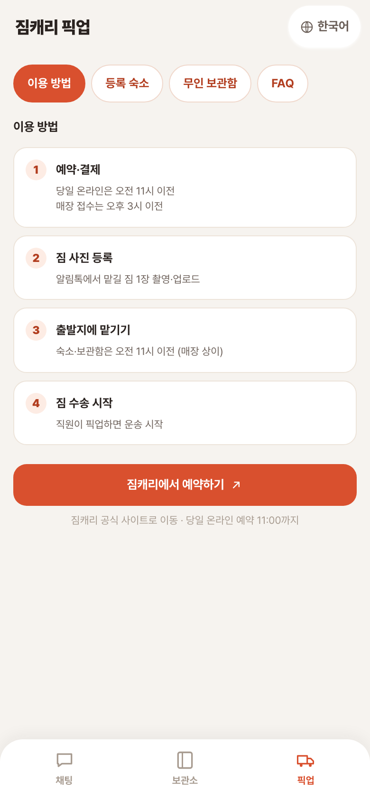

a. 문제 정의 · b. 문제 배경 데이터
a. 해결 방안의 차별성 · b. 창의적인 접근 및 분석 방법
a. 데이터 선택·확보 및 분석 과정 · b. 도출한 데이터 인사이트
a. 가설 검증을 위한 개발 결과물 · b. 구현 완성도 및 실현 가능성
짐 맡길 수 있는 곳
근처여야 한다
픽업이 되는지,
보관함은 있는지
그 역, 그 시간에
얼마나 붐비는지
신청 방법, 요금,
마감 시간
1. 관광지를 먼저 고른다
↓
2. 짐 맡길 곳을 나중에 찾는다
근처에 보관함이 없으면 계획이 무너집니다
1. 보관함 보유 71개 역을 먼저 잡는다
↓
2. 그 인근만 관광지 후보로 삼는다
추천받은 모든 곳이 짐 보관까지 가능합니다
| 일반 AI 챗봇 | 반나절 | |
| 사실 정보 | 모델이 생성해 칸수·요금을 지어낼 수 있음 | 모든 숫자는 데이터 조회 결과, 모든 안내는 공식 문서에서만 가져옵니다 |
| 모를 때 | 그럴듯하게 답함 | "확인이 필요하다"고 답하는 경계 |
| 출처 | 확인 불가 | 화면에서 근거 문서를 되짚을 수 있음 |
부산시 테마여행 API
+ 큐레이션
물품보관함
71개 역
등록 숙소
목록 대조
승하차
81,760행
| 데이터 | 규모 | 서비스 내 역할 | 출처 |
|---|---|---|---|
| 시간대별 승하차(2025) | 81,760행 · 결측 0 | 역×요일×시간대 혼잡 등급 사전 집계 | 부산교통공사 |
| 물품보관함 현황 | 공식 71개 역 · 1호선 24역 실측 845칸 | 특대형(캐리어) 기준 보관소 추천 | 부산교통공사·공공데이터포털 |
| 짐캐리 숙소·이동 흐름 | 등록 숙소 342개 | 픽업 가능 판단 · 수요 근거 | 짐캐리(2025) |
| 다국어 관광 정보 | 국·영·일 3개 언어 | 관광지 추천 · 공식 원문 그대로 | 부산시 테마여행 API |



✓ 3개 언어(한·일·영) 대화로 추천·보관함·픽업·혼잡을 한 흐름에
✓ 보관함 71개 역 데이터 + 특대형(캐리어) 기준 추천
✓ 승하차 81,760행 → 혼잡 4등급 사전 집계
✓ 픽업 가능 판단 + 짐캐리 예약 딥링크
✓ 전 데이터가 공공 API·공개 데이터라 전 노선 확장이 성립
✓ 규칙 기반 후보 선정
✓ 짐캐리에겐 등록 숙소 342개 밖 수요를 되돌려주는 유입 채널
✓ 부산시 관광 데이터 × 교통공사 시설 데이터의 첫 접점